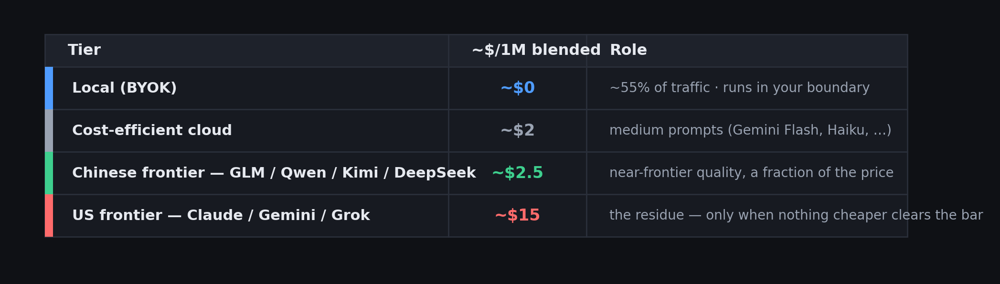
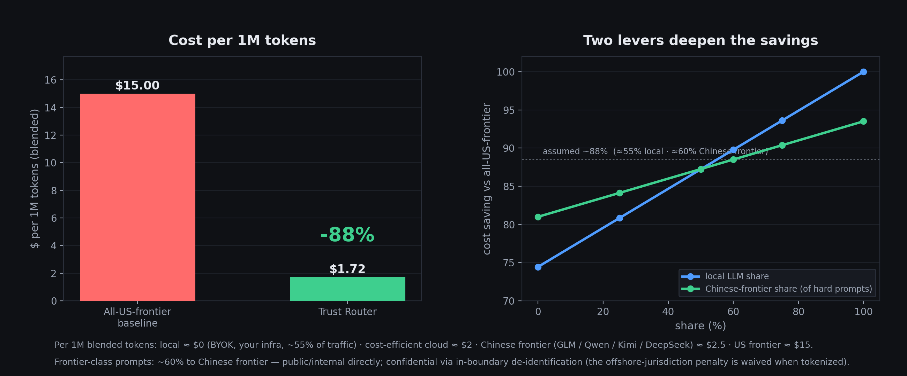
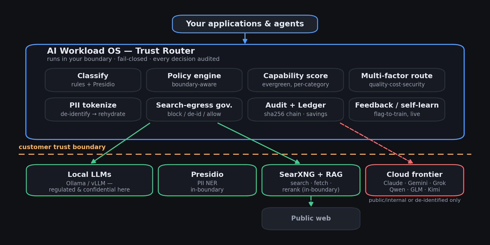
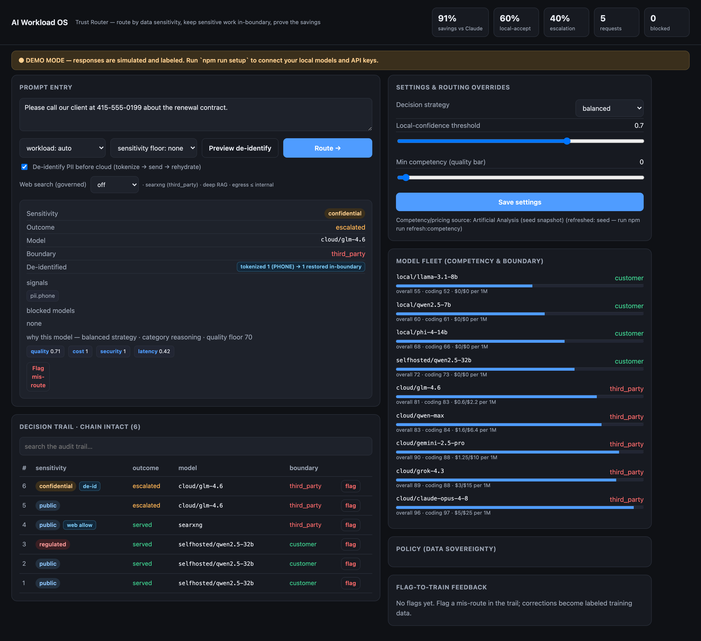
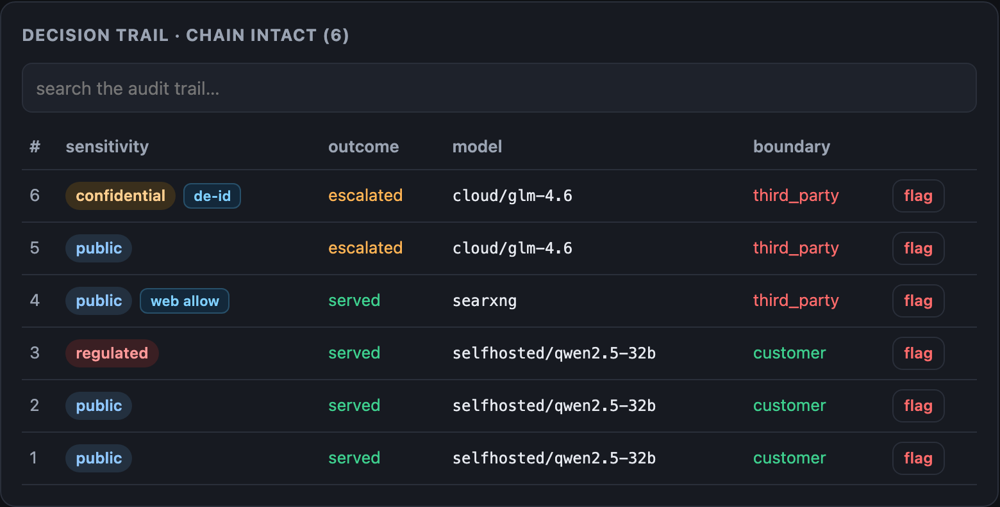

Bastion is the trust router for enterprise AI. It classifies every prompt by data sensitivity, keeps regulated data inside your boundary, and routes everything else to the cheapest model that clears the bar — with a tamper-evident audit of every decision.
HIPAA, GDPR, PCI, and financial data legally can't leave your boundary. So the most capable models stay off-limits for the work that matters most.
Sending every prompt to a top-tier US model burns budget on work a local or near-frontier model would handle just as well — at a fraction of the price.
If you can't show which model saw which data — and prove regulated data never left — you can't pass an audit, and you can't trust the savings.
Every prompt runs the same four-step lifecycle — fail-closed at each gate, so the safe path is the default path.
Each prompt is scored public · internal · confidential · regulated (rules + optional Microsoft Presidio NER), with explainable, redacted signals.
Regulated & confidential data is hard-blocked to your boundary. Structurally, fail-closed, tested to zero leaks over a corpus.
The cheapest model that clears the quality bar for the task category. Local-first; escalate to cloud only when it actually pays off.
Every decision lands in a SHA-256 hash-chained trail. Flag a bad call and the correction sticks — and survives a restart.
Stays in your boundary. Served on local/llama3; every cloud model blocked. The audit records that PII was present and its types — never the values.
Escalates to a strong coder. No sensitive data, so it routes to cloud/kimi-k2 — near-frontier coding quality at a fraction of US-frontier price.
Answers with governed live search. A local model runs an in-boundary SearXNG query; the egress is classified, audited, and answered from reranked passages.
Rules + optional Presidio NER detect PII, PHI, secrets and financial data — explainable, redacted, raise-only.
Regulated & confidential data is hard-blocked to your boundary. Strictest rule wins; fail-closed by construction.
A transparent multi-factor score — quality · cost · boundary · latency — picks the cheapest model that clears the bar.
De-identify → send → rehydrate lets confidential work use a frontier model without the PII ever leaving your walls.
In-boundary SearXNG with an egress governor: public queries go out, confidential/regulated are blocked — every egress audited.
A SHA-256 hash-chained decision trail and a cost/savings ledger — proof of what ran where, and what you saved.
Flag a mis-route and the correction applies live — raise always; lower only when safe; never declassifies protected data.
Runs in your boundary on macOS, Linux or Windows. Binds to localhost, brings your own keys, and never calls home.
Two levers compound: most traffic runs on local models at ~$0 marginal cost, and most of what's left goes to cost-efficient near-frontier models — not the priciest tier.
modeled cost reduction vs an all-US-frontier baseline, on a blended workload
Modeled on: ~55% of traffic served by local models ($0 marginal, BYOK on your hardware) · ~60% of frontier-class prompts routed to cost-efficient near-frontier models (GLM / Qwen / Kimi) · the remainder to US frontier. Confidential work reaches cheaper offshore models only via in-boundary de-identification. Your blend will vary — Bastion measures the real number from your token volumes.


Classification → policy → competency scoring → multi-factor routing, plus PII tokenization, a search-egress governor, the audit ledger, and self-learning — all inside your boundary.



One command brings up the full in-boundary stack — router, PII detection and governed search — all bound to localhost. Then point it at your models and keys.
Runs on macOS, Linux & Windows · auto-detects LIVE vs DEMO · never fakes "your data stayed local".